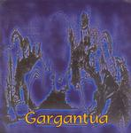

| Artist: | Gargantua |
| Title: | Gargantua |
| Label: | Ars Mundi AMS 034 R |
| Length(s): | 43 minutes |
| Year(s) of release: | 2004 |
| Month of review: | [09/2004] |
| 1) | Obilas Mi Sie (Diabolus In Musica) | 4.31 |
| 2) | Slowolnosc | 6.43 |
| 3) | Szla-dzie (ajachta) | 9.13 |
| 4) | Fumator Kulbaczny | 4.35 |
| 5) | Wrzesien Przysnien | 6.43 |
| 6) | Tarczowali Dzisiaj Las | 3.52 |
| 7) | Azur | 7.10 |